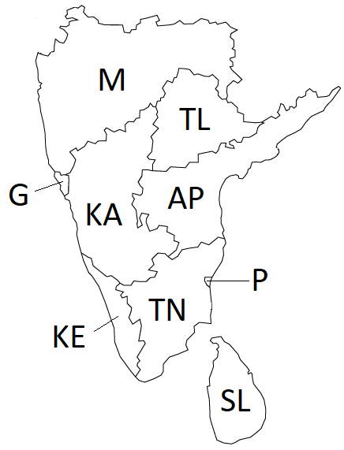

Written Assignment - CSP, Propositional and Predicate Logic
Max points:
CSE 4308: 100 (110 with EC)
CSE 5360: 100 (110 with EC)
The
assignment should be submitted via Blackboard.
Instructions
The answers can be typed as a document or handwritten and
scanned.
Name files as
assignment5_<net-id>.<format>
Accepted document formats are (.pdf). If you are
using Word or OpenOffice or LibreOffice, make sure
to
save as .pdf
Please do not submit
.txt files.
If
you are scanning handwritten documents make sure to scan it at a
minimum of 600dpi and save as a .pdf or .png file. Do not
insert images in word document and submit.
If there are multiple files in your submission, zip them
together as assignment5_<net-id>.zip and submit the .zip
file.
Problem 1
20 points (+10 points EC).
The following outline map was obtained from a map of the Indian Subcontinent.
 Figure 1. Outline Map of Southern part of Indian Subcontinent.
Your
job is to color the various sections such that no two sections
sharing a border have the same color. You are allowed to use the colors
(Red, Green, Blue, Yellow).
Part a: Draw the Constraint Graph for this problem. Can you use this information to simplify the problem?
Part b:
Assuming you are using Backtracking search to solve this problem and
that you are using both MRV and Degree heuristic to select the
variable, Which variable will be selected at each level of the search
tree [You do not need to draw the tree. Just let me know which variable
will be selected and why (MRV and degree values)]. Note: Multiple
possible answers. You only have to give one.
Part c: EC (10 points): Give one valid solution to this problem.
Problem 2
10 points.
Two logical statements A and B are logically equivalent if A
<=>
B. We have two knowledge bases, KB1 and KB2.. Write a function
CHECK_EQUIVALENCE(KB1, KB2) that:
returns true if KB1 and KB2 are logically equivalent.
returns false otherwise.
Your pseudocode can use or modify any code from the textbook or
slides, and can call any of the functions given in the textbook or
slides, as long as such code and functions are used correctly, with
correct names for the functions, and with well-specified values for all
variables and arguments.
Problem 3
10 points.
A
B
C
KB
S1
True
True
True
True
True
True
True
False
False
True
True
False
True
True
True
True
False
False
False
True
False
True
True
False
False
False
True
False
False
False
False
False
True
False
False
False
False
False
False
False
KB and S1 are two propositional logic statements, that are constructed
using symbols A, B, C, and using various connectives. The above truth
table shows, for each combination of values of A, B, C, whether KB and
S1 are true or false.
Part a: Given the above
information, does KB entail S1? Justify your answer.
Part b: Given the above
information, does statement NOT(KB) entail statement NOT(S1)? Justify
your answer.
Problem 4
10 points.
Suppose that some knowledge base contains various
propositional-logic sentences that utilize symbols A, B, C, D
(connected with various connectives). There are only two cases when the
knowledge base is false:
- First case: when A is true, B is true, C is true, D is true.
- Second case: when A is true, B is false, C is true, D is false.
In all other cases, the knowledge base is true. Write a conjunctive
normal form (CNF) for the knowledge base.
Problem 5
15 points.
On April 20, 2017, John and Mary sign the following contract:
- If it rains on May 1, 2017, then John must give Mary a check for
$10,000 on May 2, 2017
- If John gives Mary a check for $10,000 on May 2, 2017, Mary must mow
the lawn on May 3, 2017.
What truly happened those days is the following:
- it did not rain on May 1, 2017
- John gave Mary a check for $10,000 on May 2, 2017
- Mary mowed the lawn on May 3, 2017.
Part a: Write a propositional-logic
statement to express the contract. Make sure that, for each symbol that
you use, you clearly define what that symbol stands for.
Part b: Write a logical statement to
express what truly happened. When possible, use the same symbols as in
question 4a. If you need to define any new symbols, clearly define what
those new symbols stand for.
Part c: Was the contract violated
or not, Justify your answer
Problem 6
15 points.
Consider a knowledge base with these facts:
There is a dog called Shadow.
John gave Shadow to Mary.
If Shadow is male, Mary gave a smartphone to John.
If Shadow is female, Mary gave John a laptop.
John only gives male dogs to people.
Mary gave John a laptop.
Convert the above knowledge-base to a first-order logic knowledge base.
For each predicate, function, constant, or variable that you use,
explicitly state:
What type of entity it is (is it a predicate, function,
constant, or variable).
In
this first-order logic knowledge base,tallerandtallare
predicates,xis a
variable, andJohn,Billare
constants. Convert this first-order logic knowledge base into a
propositional logic knowledge base, by performing the following two
steps:
Define symbols for the propositional-logic version of the
knowledge base, and specify what their equivalents are in the original
first-order logic knowledge base.
Define the statements that should be stored in the
propositional-logic version of the knowledge base.
The
symbols you define should be comprehensive enough to allow us to
translate any well-defined inference problem in the original knowledge
base to an equivalent problem for the propositional knowledge base.
Anything that we can infer from the original first-order logic
knowledge base we should also be able to infer from the
propositionalized knowledge base, and vice versa.